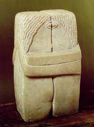
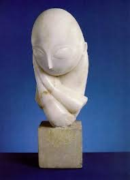
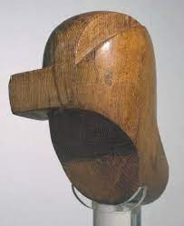

Sobre o Artista
Constantin Brâncusi (Hobiţa, 19 de fevereiro de 1876 — Paris, 16 de março de 1957) foi o mais célebre escultor romeno e um dos principais
nomes da Vanguarda moderna.
Foi uma figura central do movimento moderno e um dos pioneiros da abstração.
Sua escultura é conhecida por sua elegância visual e uso de materiais sensíveis, combinando a escultura franca do camponês com a sofisticação da vanguarda parisiense.
Depois de frequentar a Escola de Belas Artes de Bucareste e da aprendizagem da escultura de August Rodin, Brâncusi viajou para Paris em 1904. Ele criou sua primeira grande obra, O Beijo, em 1908.
curiosidade o artista tem a esscultura com o mesmo nome O beijo ,como o artista August rodin com 26 anos de Diferença
Algumas Obras do Artista

O Beijo

Torso de uma Jovem
Passáro no Espaço

Musa Adormecida

Cabeça